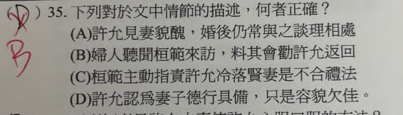
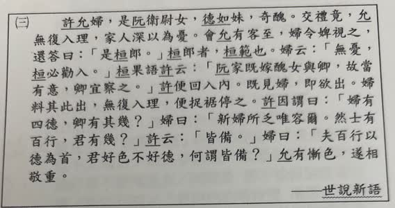

分享原卷｜第35題
完整原題
作答所需文章／材料
許允婦，是阮衛尉女，德如妹，奇醜。交禮竟，允無復入理，家人深以為憂。會允有客至，婦令婢視之，還答曰：「是桓郎。」桓郎者，桓範也。婦云：「無憂，桓必勸入。」桓果語許云：「阮家既嫁醜女與卿，故當有意，卿宜察之。」許便回入內。既見婦，即欲出。婦料其此出，無復入理，便捉裾停之。許因謂曰：「婦有四德，卿有其幾？」婦曰：「新婦所乏唯容爾。然士有百行，君有幾？」許云：「皆備。」婦曰：「夫百行以德為首，君好色不好德，何謂皆備？」允有慚色，遂相敬重。 ——《世說新語》下列對於文中情節的描述，何者正確？
(A) 許允見妻貌醜，婚後仍常與之談理相處
(B) 婦人聽聞桓範來訪，料其會勸許允返回
(C) 桓範主動指責許允冷落賢妻是不合禮法
(D) 許允認為妻子德行具備，只是容貌欠佳
先想一想，再查看答案、解說與原圖
原卷作答：D（原卷紅筆改B）
本題預期：(B)。
逐項解析
| 選項與原句 | 判讀 | 句意與判斷理由 |
|---|---|---|
| (A) 許允見妻貌醜，婚後仍常與之談理相處 | 不選 | 與他不肯進房、見妻又欲離開的情節相反。 |
| (B) 婦人聽聞桓範來訪，料其會勸許允返回 | 應選 | 婦人明說桓必勸入，後文也證實其預判。 |
| (C) 桓範主動指責許允冷落賢妻是不合禮法 | 不選 | 桓範是勸他察看阮家嫁女的用意，沒有直接斥責違禮。 |
| (D) 許允認為妻子德行具備，只是容貌欠佳 | 不選 | 只欠容貌是妻子的自述，不是許允起初對她的認定。 |
詳細說明與解題步驟
選B。婦人得知來客是桓範，立刻說「無憂，桓必勸入」，明確料定桓範會勸許允回房；後文「桓果語許云」及「許便回入內」證實她的判斷。
A與開頭許允不願進房、後來又想離開的情節相反。「無復入理」在此整句理解為沒有再進去的打算或可能，不能拆成「進房談道理」，也不採用原AI沒有依據的「理通俚」說法。
C中桓範說阮家這樣安排必有用意，勸許允好好觀察，並未直接以不合禮法責罵他。D把妻子的自述安到許允身上：「新婦所乏唯容爾」是妻子自己說只欠容貌；許允最初仍以貌取人，後來才被反問而慚愧、轉為敬重。
白話梗概：許允嫌新婚妻子相貌不好，不肯進房。妻子知道桓範能勸動他。許允返回後又想走，妻子拉住他；他以婦德等要求質問，妻子則反問他是否具備士人的德行，指出他好美色卻不重德行。許允無法自圓其說，終於慚愧並尊重妻子。
核對註記：已逐一閱讀原卷，完整保留題幹、四選項及所需文章；不依AI摘要猜補。教材課次未能確認，歸綜合。
原圖（僅本題）

